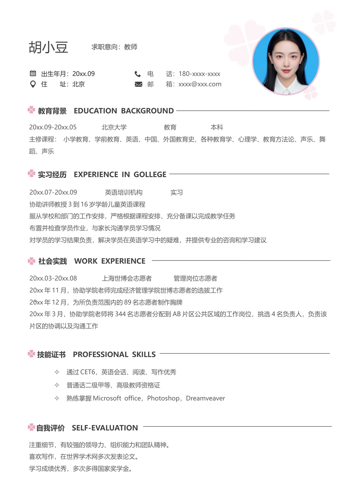

-
自我评价 SELF-EVALUATION
电 话：180-xxxx-xxxx
邮 箱：xxxx@xxx.com
胡小豆
出生年月：20xx.09
住 址：北京
求职意向：教师
通过CET6，英语会话、阅读、写作优秀
普通话二级甲等、高级教师资格证
熟练掌握Microsoft office，Photoshop，Dreamveaver
20xx.03-20xx.08 上海世博会志愿者 管理岗位志愿者
20xx 年11 月，协助学院老师完成经济管理学院世博志愿者的选拔工作
20xx 年12 月，为所负责范围内的89 名志愿者制作胸牌
20xx 年3 月，协助学院老师将344 名志愿者分配到AB 片区公共区域的工作岗位，挑选4 名负责人，负责该
片区的协调以及沟通工作
20xx.07-20xx.09 英语培训机构 实习
协助讲师教授3 到16 岁学龄儿童英语课程
服从学校和部门的工作安排，严格根据课程安排，充分备课以完成教学任务
布置并检查学员作业，与家长沟通学员学习情况
对学员的学习结果负责，解决学员在英语学习中的疑难，并提供专业的咨询和学习建议
20xx.09-20xx.05 北京大学 教育 本科
主修课程： 小学教育、学前教育、英语、中国、外国教育史、各种教育学、心理学、教育方法论、声乐、舞
蹈、声乐
注重细节，有较强的领导力、组织能力和团队精神。
喜欢写作，在世界学术网多次发表论文。
学习成绩优秀，多次多得国家奖学金。
教育背景 EDUCATION BACKGROUND
实习经历 EXPERIENCE IN GOLLEGE
社会实践 WORK EXPERIENCE
技能证书 PROFESSIONAL SKILLS